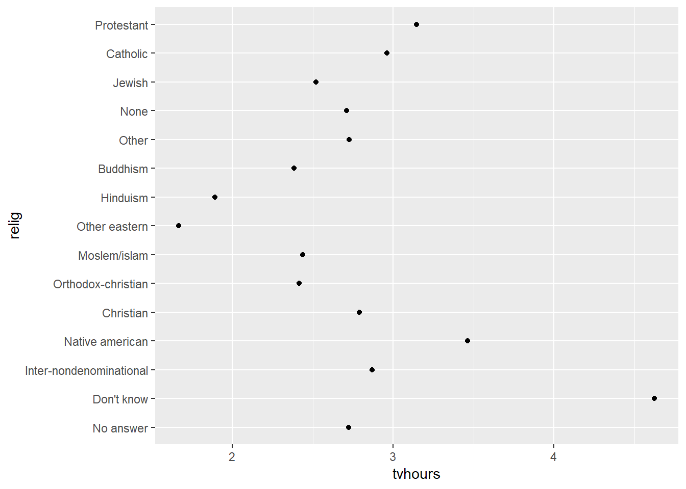
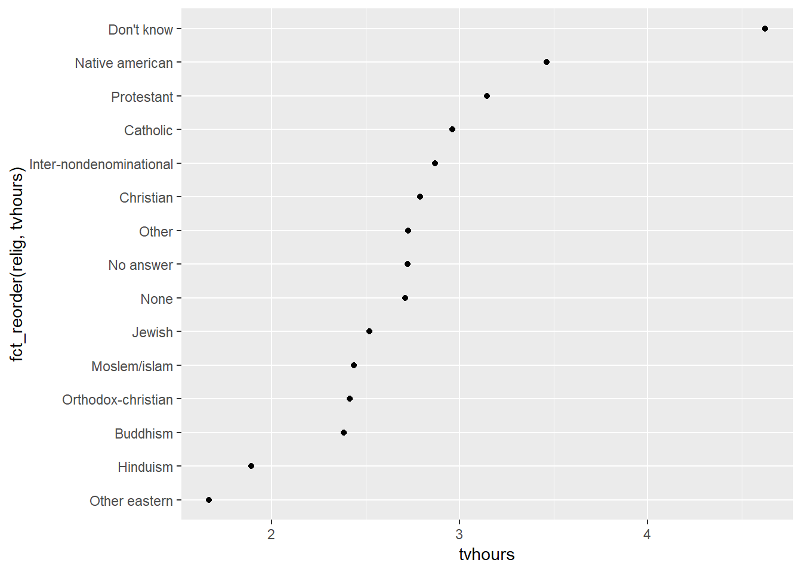
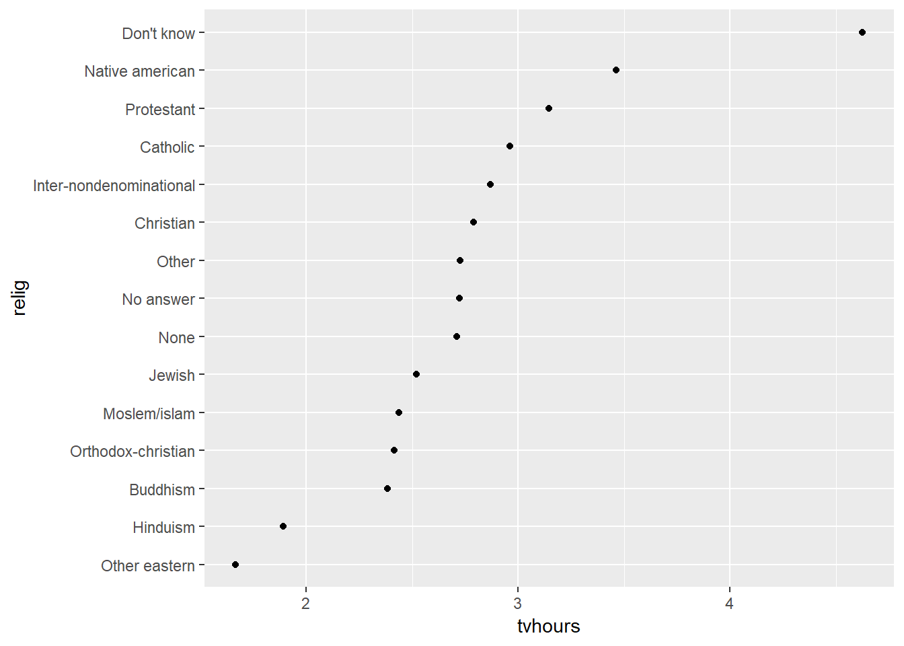
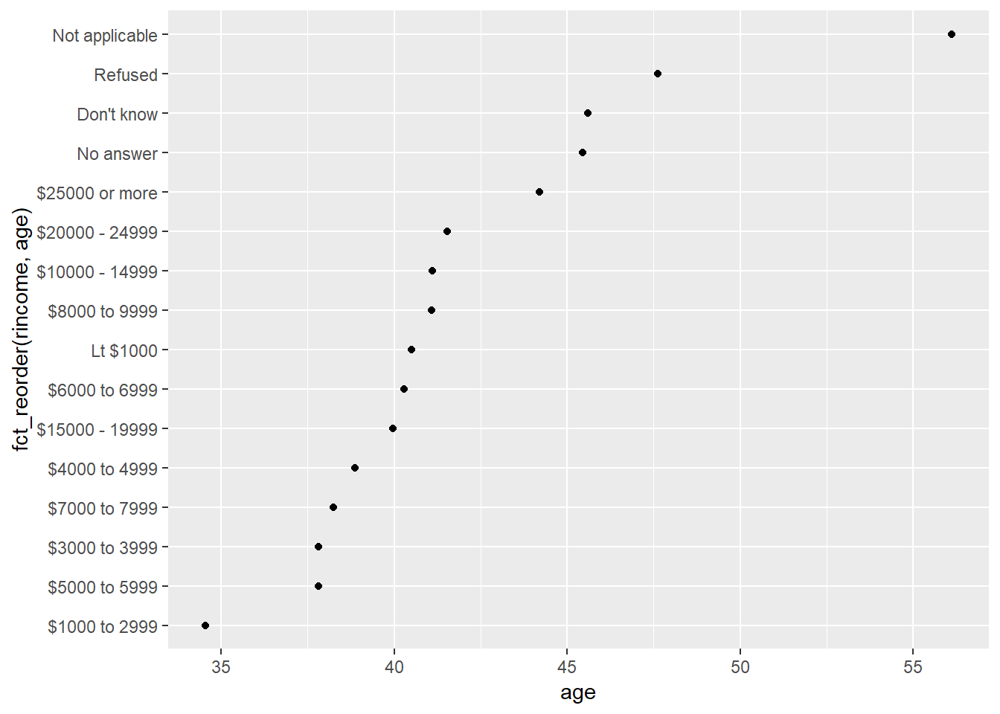
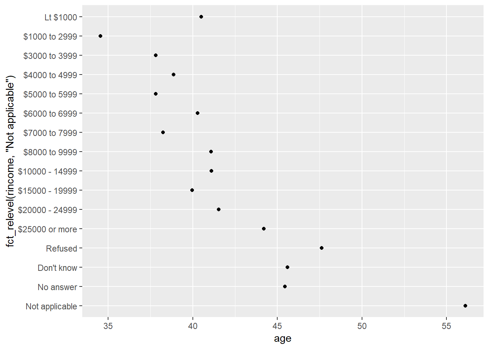
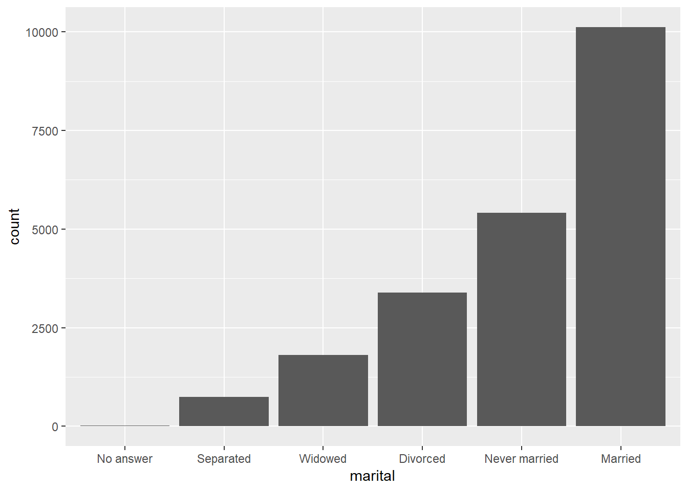

15 Kategoriska variabler (Factors)
15.1 Introduktion
Kategoriska variabler brukar i R hanteras som factors, vilket betecknar variabler som har en fixerad och känd uppsättning av möjliga värden. Factors kan också användas för att visa text-vektorer i en icke-alfabetisk ordning.
För att arbeta med factors ska vi använda modulen forcats (notera anagrammet):
Wickham rekommenderar Amelia McNamara and Nicholas Horton’s artikel, Wrangling categorical data in R (https://peerj.com/preprints/3163/) för den som vill veta mer om factors.
15.2 Skapa factors
Antag att vi har en variabel som betecknar månader:
Att använda en textsträng som denna har två problem:
- Det finns endast 12 möjliga månader och det finns inget som förhindrar typos:
- De går inte att sortera på något meningsfullt sätt:
## [1] "Apr" "Dec" "Jan" "Mar"Man kan lösa båda dessa problem med hjälp av en factor. Vi börjar med att skapa en lista på de möjliga utfallen (levels):
month_levels <- c(
"Jan", "Feb", "Mar", "Apr", "May", "Jun",
"Jul", "Aug", "Sep", "Oct", "Nov", "Dec"
)Och:
## [1] Dec Apr Jan Mar
## Levels: Jan Feb Mar Apr May Jun Jul Aug Sep Oct Nov Dec## [1] Jan Mar Apr Dec
## Levels: Jan Feb Mar Apr May Jun Jul Aug Sep Oct Nov DecNotera att varje värde/utfall som inte finns representerat i variabeln betecknas som missing (NA).
Om du vill få en varning om något går fel använder du parse_factor():
## Warning: 1 parsing failure.
## row # A tibble: 1 x 4 col row col expected actual expected <int> <int> <chr> <chr> actual 1 3 NA value in level set JamOm man struntar i att definiera levels kommer factor() att använda befintliga data i alfabetisk ordning:
## [1] Dec Apr Jan Mar
## Levels: Apr Dec Jan MarOm du vill att levels ska matcha ordningen i vilken data uppträder kan du använda unique() för att definiera levels eller med fct_inorder():
## [1] Dec Apr Jan Mar
## Levels: Dec Apr Jan Mar## [1] Dec Apr Jan Mar
## Levels: Dec Apr Jan MarOm du behöver komma åt uppsättningen giltiga levels använder du levels():
## [1] "Dec" "Apr" "Jan" "Mar"15.4 Modifiera ordningen av factors
Det är ofta önskvärt att ändra ordningen av levels i en visualisering. Till exempel för att undersöka det genomsnittliga antalet timmar som spenderas framför TV över religiös tillhörighet:
relig_summary <- gss_cat %>%
group_by(relig) %>%
summarise(
age = mean(age, na.rm = TRUE),
tvhours = mean(tvhours, na.rm = TRUE),
n = n()
)
ggplot(relig_summary, aes(tvhours, relig)) + geom_point()
Det kan vara svårt att tolka denna dotplot. Vi kan förbättra grafen genom att ändra ordningen på levels i variabeln relig genom att använda fct_reorder(). Funktionen tar tre argunment:
- f, factor:n som man vill ändra ordningen på
- x, en numerisk vektor man vill använda för att ändra ordningen
- fun, (optional) en funktion som används då det finns flera värden av x för varje värde av f. Default är median.

Då du börjar göra mer komplexa transformationer rekommenderar Wickham att flytta ut dem från aes() och till ett särskilt mutate() steg. T.ex. kan man skriva om grafen ovan som:
relig_summary %>%
mutate(relig = fct_reorder(relig, tvhours)) %>%
ggplot(aes(tvhours, relig)) +
geom_point()
Om vi skapar en liknande graf för hur genomsnittlig ålder varierar med inkomstnivå:
rincome_summary <- gss_cat %>%
group_by(rincome) %>%
summarise(
age = mean(age, na.rm = TRUE),
tvhours = mean(tvhours, na.rm = TRUE),
n = n()
)
ggplot(rincome_summary, aes(age, fct_reorder(rincome, age))) + geom_point()
Här är en godtycklig ändring av levels ordning inte någon bra idé eftersom rincome redan har en implicit ordning som vi inte bör rådda med. Använd bara fct_reorder() för factors som är godtyckligt ordnade.
Men det verkar klokt att ändå ha kategorin “Not applicable” vid sidan av övriga levels. För det kan man användaa fct_relevel(). Funktionen tar en factor f och sedan godtyckligt antal levels som man vill ha “vid sidan av”:

För stapeldiagram kan man använda fct_infreq() för att ordna levels efter ökande frekvens. Man kan kombinera med fct_rev().
gss_cat %>%
mutate(marital = marital %>% fct_infreq() %>% fct_rev()) %>%
ggplot(aes(marital)) +
geom_bar()
15.5 Modifiera factor levels
Inte sällan vill man ändra värdet på levels, t.ex. för att göra grafer tydligare eller i publikationer. Det kan man göra med fct_recode(). Till exempel, ta variabeln gss_cat$partyid:
## # A tibble: 10 x 2
## partyid n
## <fct> <int>
## 1 No answer 154
## 2 Don't know 1
## 3 Other party 393
## 4 Strong republican 2314
## 5 Not str republican 3032
## 6 Ind,near rep 1791
## 7 Independent 4119
## 8 Ind,near dem 2499
## 9 Not str democrat 3690
## 10 Strong democrat 3490Dessa levels är komprimerade och inkonsistenta. Låt oss göra om dem:
gss_cat %>%
mutate(partyid = fct_recode(partyid,
"Republican, strong" = "Strong republican",
"Republican, weak" = "Not str republican",
"Independent, near rep" = "Ind,near rep",
"Independent, near dem" = "Ind,near dem",
"Democrat, weak" = "Not str democrat",
"Democrat, strong" = "Strong democrat"
)) %>%
count(partyid)## # A tibble: 10 x 2
## partyid n
## <fct> <int>
## 1 No answer 154
## 2 Don't know 1
## 3 Other party 393
## 4 Republican, strong 2314
## 5 Republican, weak 3032
## 6 Independent, near rep 1791
## 7 Independent 4119
## 8 Independent, near dem 2499
## 9 Democrat, weak 3690
## 10 Democrat, strong 3490Fct_recode() ignorerar levels som inte nämns explicit och varnar om man refererar till en level som inte existerar.
För att kombinera grupper kan man använda fler gamla levels till samma nya level:
gss_cat %>%
mutate(partyid = fct_recode(partyid,
"Republican, strong" = "Strong republican",
"Republican, weak" = "Not str republican",
"Independent, near rep" = "Ind,near rep",
"Independent, near dem" = "Ind,near dem",
"Democrat, weak" = "Not str democrat",
"Democrat, strong" = "Strong democrat",
"Other" = "No answer",
"Other" = "Don't know",
"Other" = "Other party"
)) %>%
count(partyid)## # A tibble: 8 x 2
## partyid n
## <fct> <int>
## 1 Other 548
## 2 Republican, strong 2314
## 3 Republican, weak 3032
## 4 Independent, near rep 1791
## 5 Independent 4119
## 6 Independent, near dem 2499
## 7 Democrat, weak 3690
## 8 Democrat, strong 3490Om man vill slå ihop flera levels används fct_collapse() vilken är en användbar variant av fct_recode(). För varje ny level kan man koppla en vektor av gamla levels:
gss_cat %>%
mutate(partyid = fct_collapse(partyid,
other = c("No answer", "Don't know", "Other party"),
rep = c("Strong republican", "Not str republican"),
ind = c("Ind,near rep", "Independent", "Ind,near dem"),
dem = c("Not str democrat", "Strong democrat")
)) %>%
count(partyid)## # A tibble: 4 x 2
## partyid n
## <fct> <int>
## 1 other 548
## 2 rep 5346
## 3 ind 8409
## 4 dem 7180Man kan även slå samman levels med de minsta frekvenserna till en “restpost”. Då använder man fct_lump() och anger parametern n för att ange antalet grupper man vill redovisa. Funktionen fct_lump() slår då samman de minsta grupperna till en restpost så att det slutliga antalet grupper blir n:
gss_cat %>%
mutate(relig = fct_lump(relig, n = 10)) %>%
count(relig, sort = TRUE) %>%
print(n = Inf)## # A tibble: 10 x 2
## relig n
## <fct> <int>
## 1 Protestant 10846
## 2 Catholic 5124
## 3 None 3523
## 4 Christian 689
## 5 Other 458
## 6 Jewish 388
## 7 Buddhism 147
## 8 Inter-nondenominational 109
## 9 Moslem/islam 104
## 10 Orthodox-christian 95